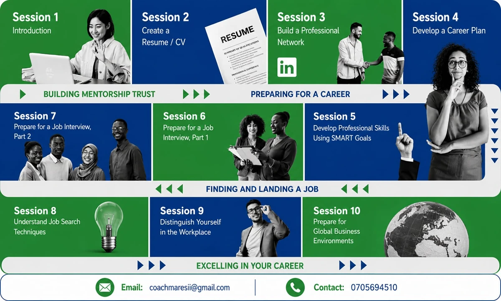
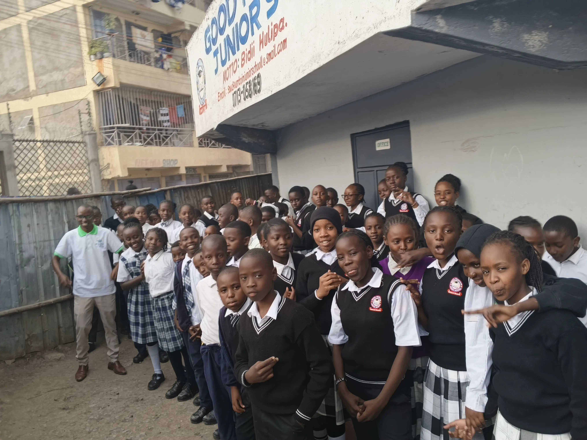

01
Youth Employability · Entrepreneurship
Youth Employability & Entrepreneurship Training
📍 Nairobi County, Kenya · Oct 2023 – Present · SHOFCO
The Problem
Many recent graduates and youth in Nairobi's marginalised slum communities struggled to translate their skills and ambition into jobs or businesses — held back by weak CVs, limited interview confidence, and little exposure to job market expectations or entrepreneurial fundamentals.
Isaiah's Role
As Sustainable Livelihoods Officer, Isaiah designs and facilitates monthly employability and entrepreneurship trainings, sources appropriate placements for participants, and provides direct mentorship to young entrepreneurs and small business owners.
Key Activities
- Facilitated monthly job-readiness training covering resume writing, professional communication, interview skills, networking, and workplace etiquette for 5,000+ youth
- Delivered entrepreneurship training on idea generation, business modelling, market research, financial planning, and pitching
- Conducted business mentorship to 300+ young entrepreneurs and small business owners in urban slums
- Built and maintained relationships with 15+ local employers and community organizations to secure job placements and internships
- Trained 6 refugee groups (100+ members) under the Re-Build program on USLA methodology, entrepreneurship, and financial literacy
Outcomes
5,000+ Youth trained
500+ Job search effectiveness gains
50% Increase in job placement rate
30% Increase in entrepreneurial ventures
20% Attendees who started a business
Partners